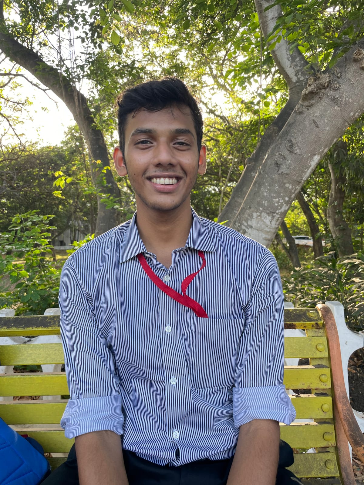
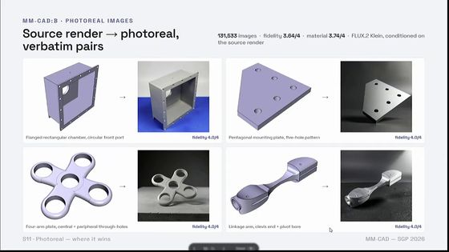
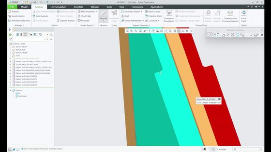
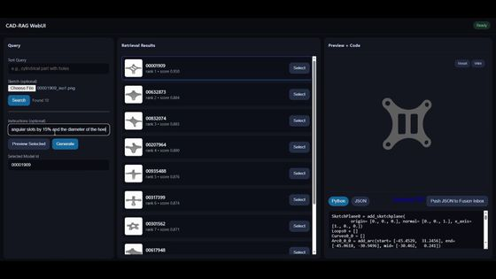
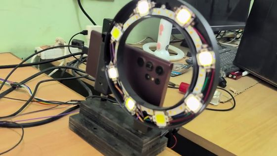
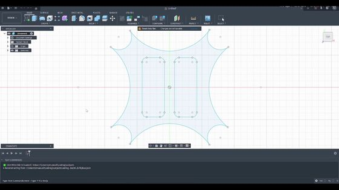
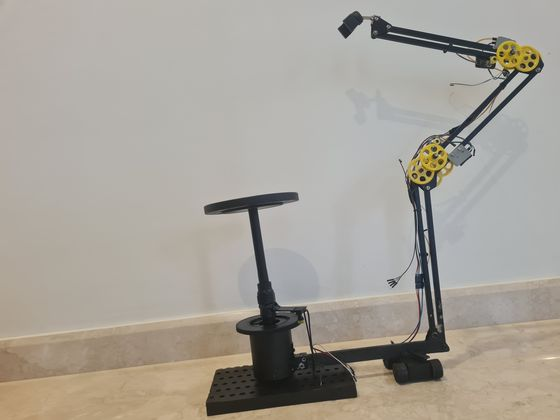

Research Associate · AGC Lab, IIT Madras
Anush Bharathi R
Mechanical engineer. I build AI that designs, rebuilds and inspects real parts, and I've been building machines since I was fifteen.
I build hardware prototypesrobotic systemsgeometric reasoning for CADlarge engineering datasetsvision-based inspectionverifiable design AI for industry

- Now
- Research Associate, AGC Lab, and Project Associate, ADOPT Lab, IIT Madras
- Education
- B.E. Mechanical Engineering, Madras Institute of Technology, Anna University, 2025. CGPA 8.38/10
- Papers
- MM-CAD, Computer Graphics Forum, SGP 2026. CAD-RAG, Journal of WSCG, 2025. Abra-CAD, in preparation for CVPR 2027
- Industry
- Systems built with TE Connectivity, ABI Showatech and Brakes India
1Research geometry and CAD
I work on AI for engineering design whose output an engineer can open, check and change.

Computer Graphics Forum, SGP 2026 · first author226K CAD models, each in five formsA public dataset of 226K CAD models, each as a B-rep, a point cloud, text, sketches and images, so software can learn to connect the ways engineers describe a part. SGP 2026.226KCAD models, public on Hugging Face
In trial at TE Connectivity3 to 4 days of CAD, done in 8 to 12 minutesA busbar design that takes an engineer 3 to 4 days took 8 to 12 minutes in trial at TE Connectivity. A solver checks every change before CAD runs.8–12 minper design, against 3 to 4 days by hand
Journal of WSCG, 2025Find an old design, edit it in a sentenceAI that returns a CAD model with its construction history, written from a sketch or text, or retrieved from 137,004 existing models and edited. Journal of WSCG, 2025.137,004CAD models in the retrieval libraryAlso in this line of work: ABI inspection, SynthDefect-CAD, desAIgn works.
2Papers
MM-CAD: A Multi-Modal CAD Dataset and Benchmark for Cross-Modal Geometric Learning
A. Bharathi, A. Ananthakrishnan, R. Muthuganapathy
Computer Graphics Forum 45(5), Proc. SGP 2026
A multi-modal retrieval augmented framework for user editable 3D CAD model generation
A. Ananthakrishnan, A. Bharathi, V. Dharanivendhan, M. Ramanathan
Journal of WSCG, 2025
Abra-CAD: Fit What Is Observed, Learn What Is Missing, Search What Remains
A. Bharathi, R. Muthuganapathy
In preparation for CVPR 2027
3Everything I've built 2026 back to 2016
 The same defect can pass or failSynthDefect-CAD · 2026–
The same defect can pass or failSynthDefect-CAD · 2026–
Defects an ordinary photo missesABI inspection · 2025–26 Which factory trial to run nextBrakes India process models · 2025–26226K CAD models, each in five formsMM-CAD · 2025–26
Which factory trial to run nextBrakes India process models · 2025–26226K CAD models, each in five formsMM-CAD · 2025–26 A robot arm packs what an AI plansDeep-Pack · 2025
A robot arm packs what an AI plansDeep-Pack · 2025
What eight senior engineers asked fordesAIgn works · 2024–25
A 3D capture rig from printed gearsCamera-tracking rig · 2024Find an old design, edit it in a sentenceCAD-RAG · 2023–24 An app that recommends safer stimsStimMate · 2023
An app that recommends safer stimsStimMate · 2023 Crop disease warnings by text messageKishan Know · 2021–22
Crop disease warnings by text messageKishan Know · 2021–22 Truck loading as a 3D animationPackMax · 2021–22
Truck loading as a 3D animationPackMax · 2021–22 EV chargers sited from vehicle dataE-Metric · 2021–22
EV chargers sited from vehicle dataE-Metric · 2021–22 A hydrogen jet, built at fifteenProject Iron Man · School years
A hydrogen jet, built at fifteenProject Iron Man · School years The e-bike that won the CBSE nationalsE-Bike · 2017–19
The e-bike that won the CBSE nationalsE-Bike · 2017–19